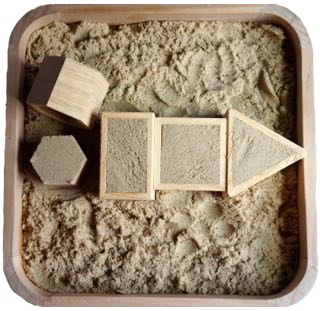

We need to talk about MongoDB sandboxes...
At Compose, we’ve historically had a free tier of MongoDB service, but with the advances made in our paid service, we think its time to explain the difference in more detail, especially to our paying customers who also use sandboxes. To understand the present, you need to know where we came from.
How we got here
When we started Compose (MongoHQ), the service was fairly homogeneous in that the same platform was used to support both the free and paid tiers. The only difference was that the free tiers shared a single mongod instance on a server and all the free users resided on that system. Other users had dedicated processes on shared systems or dedicated systems. But the underlying fabric of the system was the same.
Time passed and everything was scaled up, including the sandboxes. At the same time we were working on our next generation network fabric and we focussed on the needs of the paying customers. That meant a platform that could bring up containerised and virtualised instances on command and automatically arrange them into auto-scaling clusters. That has become our Elastic Deployments technology and we’re taking that technology even further with Transporter interconnects and new database support for Elasticsearch.
Sandboxes: the pitfalls
But while we’ve developed that, the sandboxes have remained essentially the same. They are not as resilient, they aren’t backed up, they are still shared on a single mongod instance. Elastic Deployments don’t scale down into sandboxes for free. This has meant an odd situation has arisen because paying customers with production Elastic Deployments have also found the sandboxes useful for “QA and testing” code before taking it live.
We don’t recommend this at all. The problem is the free sandboxes aren’t running on the same underlying platform or in a similar environment. For example, sandboxes run on a fixed version of MongoDB that is, by design, a version or two out from the current version. If you are testing on the sandbox but run the latest MongoDB on your Elastic Deployment, you’re not going to be testing with the same version.
And because your Elastic Deployment is a replica set already and your sandbox isn’t, you won’t have the ability to test your application against replica sets so when your production primary server does a step down, you won’t know how your application will react. And a lack of backup and restore also means you can’t easily verify the whole life cycle of your data and, for example, audit the data on disk for a strict QA test.
Sandbox alternatives for QA and Production
If you want to do QA and testing in a meaningful way, then what we recommend is that you get a separate Elastic Deployment and remember to keep the data stored on it under 1GB. You can set exactly the same MongoDB version as your production database, you can test your applications with replica sets and step downs and you get the automated and on-demand backups you need for auditing. If you need a number of QA databases, remember that you can set up as many databases within a single deployment as you need. You can create those extra databases through the Compose dashboard by selecting the deployment you want the database added to. Then select Add Database on the deployment’s database view. You will now be prompted to name your new database and click Add Database when done and your new database will be created. Don’t create extra test/QA databases within your production deployment though; performing a stepdown on those databases will also stepdown your production database. Make sure it’s in a separate test/QA Elastic Deployment.
Even more worrying for us are users who are running production systems using sandboxes as a database backend. When a sandbox server goes down, we will use our best efforts to get it back on line, but at the same time, we don’t make any assurances about uptime on the sandbox servers – our production customers come first. There’s also no customer accessible automatic backup so unless you are writing code to back up your database, you will be leaving yourself exposed. Sandboxes are fragile by design and it is possible that you can lose your data – we obviously try for that not to happen, but it can happen. That is the risk you take in our sandboxes. They aren’t production-ready databases.
For that assurance you want an Elastic Deployment of MongoDB. Not only will that give you the reliability of a replica set with a secondary to fall back on, automatic and on-demand backups, and access to the full range of Compose tools, it’ll give you all that for only $18/GB/Month. If you’ve been living in the sandbox then you know at most you’ve only got half that data thanks to the 512MB sandbox limit, so you get plenty of room to expand too with no extra costs. And when your startup needs more data? You can elastically scale up automatically to up to a terabyte, all at a simple predictable cost and leaving you to get on with running your business, not your databases.
We’re happy to see our free sandboxes being used by customers who are beginning to find their way around MongoDB and want to start experimenting with it without any financial commitment. But we really do have to recommend that if your business relies on a free sandbox that you seriously consider what a great deal more power, support and capabilities you can get by getting an Elastic Deployment of MongoDB at Compose. You can clone your existing sandbox to an Elastic Deployment or provision a deployment and then import the data from the sandbox. If you need guidance or further advice, drop a mail to support@compose.io where we’ll be happy to help you.